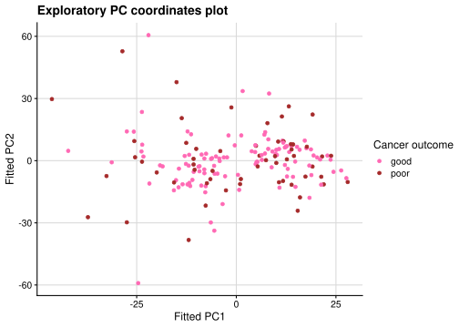
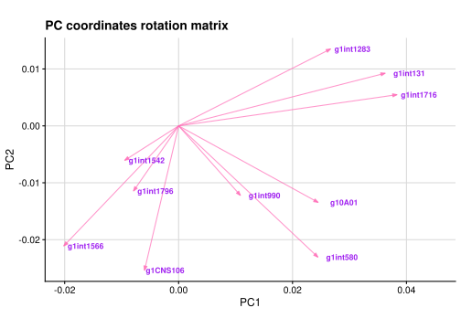
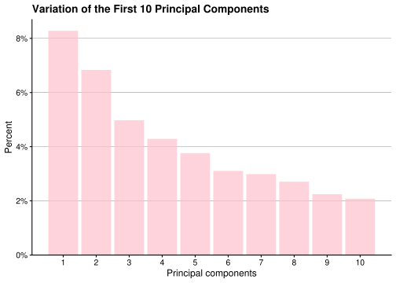

rm(list = ls())
library("tidyverse")
library("here")
library("gitcreds")
library("usethis")
library("broom")
library("cowplot")Week 7 report Group 8
PCA tidyverse style on Gravier data
Tasks
| Task | Responsible | Done? |
|---|---|---|
| Create this file | Dana | Yes |
| Load libraries | Vakare | Yes |
| Load data | Dana | Yes |
| Clean data | Greta | Yes |
| Produce first plot | Dana | Yes |
| Produce middle plot | Vakare | Yes |
| Reproduce last plot | Greta | Yes |
Merging comment
Use system(“git merge main”) in R console to merge your branch to main. Remember to Pull before the merge.
Load libraries
Set up git merging conflict code
usethis::use_git_config(pull.rebase = "false")Download data the first time and save it ONLY RUN THIS ONCE IF YOU DO NOT HAVE THE DATA
# target_url <- "https://github.com/ramhiser/datamicroarray/raw/master/data/gravier.RData"
# output_file <- "data/_raw/gravier.RData"
# curl::curl_download(url = target_url, destfile = output_file)Load data
load(file = here("data/_raw/gravier.RData")) # loads as gravierInspect data
gravier |> names()[1] "x" "y"gravier |> pluck("x") |> head(n = c(10,10)) g2E09 g7F07 g1A01 g3C09 g3H08 g1A08
1 -0.001443417 -0.001443417 -0.083141235 -0.04752940 0.015782997 -0.033569533
2 -0.060397280 0.012926174 -0.001443417 0.01044266 0.031574283 0.108357178
3 0.039840265 0.052415894 -0.078563669 0.06350294 -0.039488290 0.034215715
4 0.010063683 0.031395196 -0.021804370 0.02147973 0.086783766 0.027154052
5 0.049630768 0.020057652 0.037030731 0.03113668 0.020657954 -0.017417053
6 -0.066427362 0.046840254 0.007195501 -0.36959453 0.002882509 0.024319679
7 -0.002888279 -0.081613766 -0.029146346 -0.02492391 -0.017417053 0.017209290
8 -0.197599960 -0.049904906 -0.063409170 -0.02978888 0.029982866 0.001441974
9 0.002882509 0.020057652 0.027154052 0.01735045 -0.000078900 -0.063409170
10 -0.057391664 -0.057391664 -0.083141235 -0.08971433 -0.101400281 -0.143861819
g1B01 g1int1 g1E11 g8G02
1 -0.136061550 0.017981284 0.025737561 0.007195501
2 0.015782997 0.079975377 -0.005782353 0.000000000
3 0.002882509 0.059355278 0.032806145 0.021479727
4 -0.015957574 0.075874867 0.015782997 -0.104697379
5 0.111031312 -0.046921047 0.052415894 0.052415894
6 0.090853430 0.048236186 0.032806145 0.142740172
7 -0.169744676 -0.005782353 0.000000000 0.097610797
8 -0.052894948 -0.040130974 -0.039488290 -0.096961730
9 0.037030731 0.031395196 0.045442971 -0.014499570
10 -0.166502663 0.017209290 -0.052894948 -0.369594529gravier |> pluck("y") |> head()[1] good good good good good good
Levels: good poorClean data
This is tidy data since each variable forms a column, each observation forms a row, and each value has a single cell.
gravier_clean <- gravier |>
bind_cols() |>
as_tibble()
gravier_clean |> head(n = c(10,10))# A tibble: 10 × 10
g2E09 g7F07 g1A01 g3C09 g3H08 g1A08 g1B01 g1int1
<dbl> <dbl> <dbl> <dbl> <dbl> <dbl> <dbl> <dbl>
1 -0.00144 -0.00144 -0.0831 -0.0475 0.0158 -0.0336 -0.136 0.0180
2 -0.0604 0.0129 -0.00144 0.0104 0.0316 0.108 0.0158 0.0800
3 0.0398 0.0524 -0.0786 0.0635 -0.0395 0.0342 0.00288 0.0594
4 0.0101 0.0314 -0.0218 0.0215 0.0868 0.0272 -0.0160 0.0759
5 0.0496 0.0201 0.0370 0.0311 0.0207 -0.0174 0.111 -0.0469
6 -0.0664 0.0468 0.00720 -0.370 0.00288 0.0243 0.0909 0.0482
7 -0.00289 -0.0816 -0.0291 -0.0249 -0.0174 0.0172 -0.170 -0.00578
8 -0.198 -0.0499 -0.0634 -0.0298 0.0300 0.00144 -0.0529 -0.0401
9 0.00288 0.0201 0.0272 0.0174 -0.0000789 -0.0634 0.0370 0.0314
10 -0.0574 -0.0574 -0.0831 -0.0897 -0.101 -0.144 -0.167 0.0172
# ℹ 2 more variables: g1E11 <dbl>, g8G02 <dbl>gravier_clean |>
write_tsv(file = "data/02_gravier_clean.tsv.gz")First plot
Running PCA (we need this for all 3 plots):
pca_fit <- gravier_clean |>
select(where(is.numeric)) |> # retain only numeric columns as prcomp() can only work on numeric data
prcomp(scale = TRUE) # do PCA on scaled data (which has zero mean and unit variance for every variable i.e. every variable contributes equally to the PCA)Plotting the data in PC coordinates
pca_fit |>
augment(gravier_clean) |> # add original dataset back in
ggplot(aes(.fittedPC1, .fittedPC2, color = y)) +
geom_point(size = 1.5) +
labs(title = "Exploratory PC coordinates plot",
x = "Fitted PC1", y = "Fitted PC2",
color = "Cancer outcome") +
scale_color_manual(values = c(good = "hotpink", poor = "brown")) +
theme_half_open(12) + background_grid()
Second plot
Investigating how 10 random genes contribute to first two principal components (i.e. is a gene increasing or decreasing PC value?).
pca_long <- pca_fit |>
tidy(matrix = "rotation")
pca_long |>
head(n =10)# A tibble: 10 × 3
column PC value
<chr> <dbl> <dbl>
1 g2E09 1 0.0418
2 g2E09 2 -0.00674
3 g2E09 3 0.00314
4 g2E09 4 0.0286
5 g2E09 5 -0.00141
6 g2E09 6 0.000272
7 g2E09 7 -0.0158
8 g2E09 8 0.0233
9 g2E09 9 0.0139
10 g2E09 10 0.0263 # Turning long data into wide data
pca_wide <- pca_long |>
pivot_wider(names_from = PC, values_from = value)
# picking 10 random genes to plot
set.seed(5606)
pca_sample <- pca_wide |>
slice_sample(n = min(10, nrow(pca_wide)))
# Defining arrow style
arrow_style <- arrow(angle = 20, ends = "first", type = "closed",
length = grid::unit(5, "pt"))# Plotting selected data
ggplot(pca_sample, aes(x = `1`, y = `2`)) + # 1 is PC1, 2 is PC2
geom_segment(aes(xend = 0, yend = 0),
arrow = arrow_style, alpha = 0.7, color = "hotpink") +
geom_text(aes(label = column),
hjust = 1,
nudge_x = 0.007,
color = "purple",
size = 3,
fontface = "bold") +
coord_fixed() +
theme_half_open(12) +
background_grid() +
labs(title = "PC coordinates rotation matrix",
x = "PC1",
y = "PC2")
Third plot
Variance explained by each PC (up to PC10)
In this plot we are looking at the variance explained by each principle component (up to PC10).
# get tibble of PCs and variances
pca_fit |>
tidy(matrix = "eigenvalues") |>
# choose only the first 10 PCs
filter(PC <= 10) |>
ggplot(aes(x = PC, y = percent)) +
geom_col(fill= "pink", alpha = 0.7) +
scale_x_continuous(breaks = 1:10) +
scale_y_continuous(labels = scales::percent,
expand = expansion(mult = c(0, 0.05))) +
theme(plot.title = element_text(size = 10)) +
labs(title = "Variation of the First 10 Principal Components",
x = "Principal components",
y = 'Percent') +
theme_half_open(12) +
theme(panel.grid.major.x = element_blank(),
panel.grid.minor.x = element_blank(),
panel.grid.major.y = element_line(color = "gray50", linewidth = 0.2))
The first component captures more than 8 percent of the variation in the data. The remaining nine components, among the first ten, capture progressively smaller percentages of the variation. Although PC1 capturing 8% is a low number, this is typical for large gene expression datasets and thus as expected.